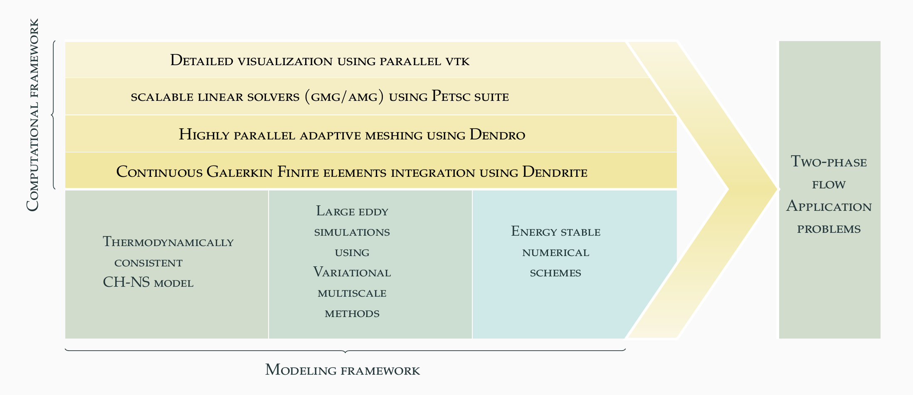

An adaptive block solver for simulating two-phase flows
Research work on development of block solvers deployed on adaptive meshes to simulate two-phase flows.

In picture above: Comparison of bubble shapes and terminal velocities with experimental results and corresponding streamlines.
Summary
In our recent work on block-solver for simulating two-phase flows with deforming interfaces at various density contrasts by solving thermodynamically consistent Cahn-Hilliard Navier-Stokes equations. We use fully implicit non-linear finite element based methods.
Highlights of the work
-
Two-phase flows simulated using thermodynamically consistent Cahn-Hilliard Navier-Stokes equations.
-
Provably energy-stable Crank-Nicolson-type time integration scheme.
-
Continuous Galerkin finite element with variational multi-scale (VMS) used.
-
Deployed a parallel numerical implementation using fast octree-based adaptive meshes.
Numerical Implementation

Publication based on this approach
- Makrand A. Khanwale, Alec D. Lofquist, Hari Sundar, James A. Rossmanith, and Baskar Ganapathysubramanian. “Simulating two-phase flows with thermodynamically consistent energy stable Cahn-Hilliard Navier-Stokes equations on parallel adaptive octree based meshes”. In: Journal of Computational Physics 419 (2020), p. 109674. [ARXIV]|[LINK]